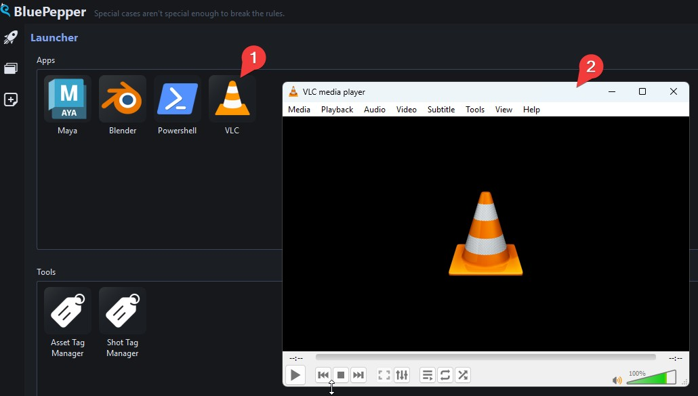
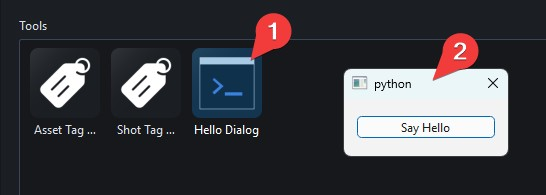
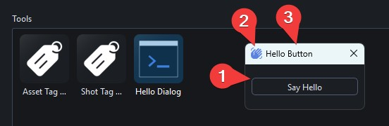

Launcher Configuration¶
Let's add a simple icon to the Launcher that opens VLC.
First, create a file, for instance, conf/scripts/vlc.py :
:
Then open conf/app_launcher.py and append an item to the apps list:
A new app icon will appear in the Apps section of the Launcher, and VLC will open when you double-click it. Note that there is no technical difference between apps and tools, it is simply a convenient way to organise your icons. If you wanted the VLC icon to appear at the bottom of the Launcher, you would add the LauncherItem to tools instead of apps.

This approach to launching applications through custom functions gives you a great deal of flexibility from simple one-liners to complex launch sequences. See maya_launcher.py for a more involved example.
About Qt Dialogs¶
BluePepper uses PySide6 for its interface, so you can open your own Qt Dialogs from the Launcher. Let's create one in a new file conf/scripts/open_dialog.py:
# BluePepper uses qtpy to wrap around PySide6 and PySide2
from qtpy.QtWidgets import QDialog, QPushButton, QVBoxLayout
class HelloDialog(QDialog):
def __init__(self, parent=None):
super().__init__(parent)
layout = QVBoxLayout()
self.setLayout(layout)
self.button = QPushButton("Say Hello")
layout.addWidget(self.button)
self.button.clicked.connect(self.say_hello)
def say_hello(self):
print("hello")
def show_dialog():
dialog = HelloDialog()
dialog.exec()
Then add it to the Launcher:

About Beautiful Qt Dialogs¶
The dialog above is rather plain. BluePepper provides custom Qt widgets and dialogs to apply the correct stylesheet and ensure a consistent look across the application.
Here is a polished version of open_dialog.py:
from qtpy.QtWidgets import QPushButton, QVBoxLayout, QWidget
from bluepepper.gui.utils import get_qta_icon
from bluepepper.gui.widgets.container import (
ContainerDialog,
ContainerWidget,
get_qt_app,
)
class HelloWidget(QWidget): # QWidget instead of QDialog
def __init__(self, parent=None):
super().__init__(parent)
layout = QVBoxLayout()
self.setLayout(layout)
self.button = QPushButton("Say Hello")
layout.addWidget(self.button)
self.button.clicked.connect(self.say_hello)
def say_hello(self):
print("hello")
def show_dialog():
app = get_qt_app()
icon = get_qta_icon(name="mdi6.hand-wave", scale_factor=1.25)
widget = HelloWidget()
container = ContainerWidget(widget=widget, icon=icon, title="Hello Button")
dialog = ContainerDialog(container)
dialog.exec()
The result will be identical in functionality, but with considerably more style (the BluePepper stylesheet, an icon, and a proper window title).

If you need a reminder on how to use QtAwesome icons, see Adding Icons to Menu Actions.